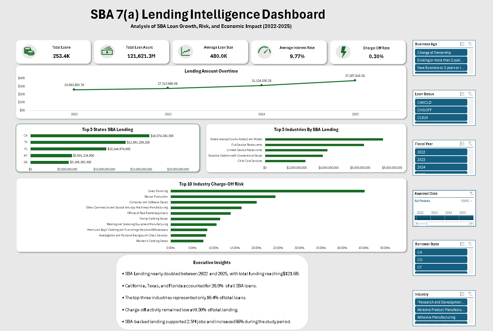
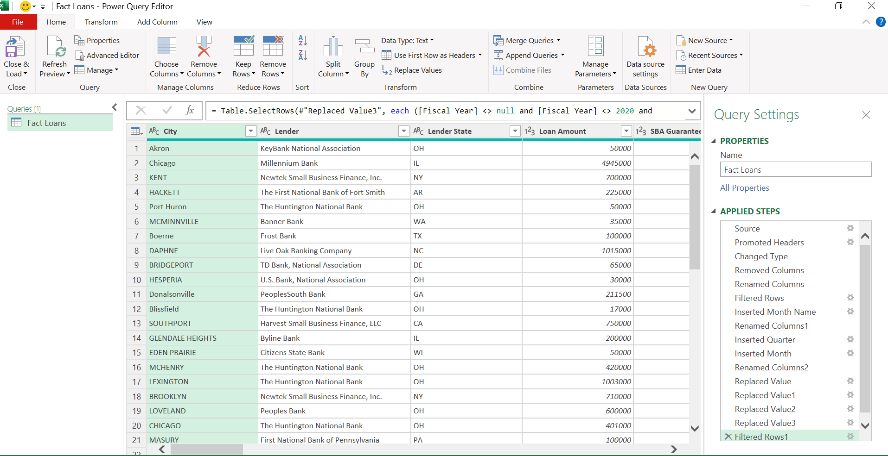
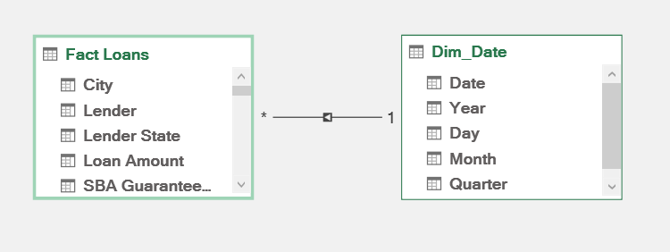
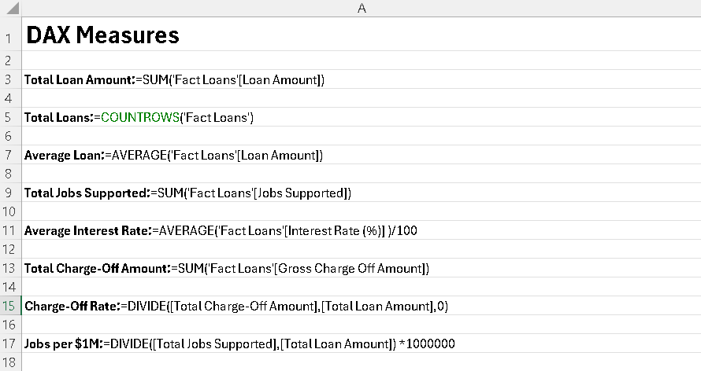
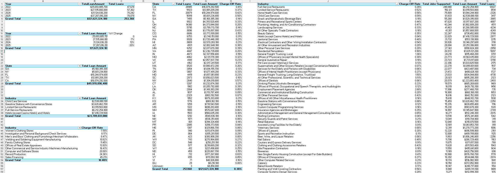

SBA 7(a) Small Business Lending Analysis (2022–2025)
Microsoft Excel • Power Query • Power Pivot • DAX • Data Modeling
Project Overview
This project analyzes SBA 7(a) loan activity between 2022 and 2025 using Microsoft Excel, Power Query, Power Pivot, DAX, and the Excel Data Model.
The objective was to evaluate lending growth, geographic and industry concentration, charge-off risk, and employment impact using publicly available SBA loan data. Through data cleaning, modeling, KPI development, and dashboard design, I transformed raw loan-level data into actionable business insights.
Dashboard Preview

Business Questions
This project focused on answering five key business questions:
How did total SBA lending change between 2022 and 2025?
Which states received the most SBA loans and how did lending activity change over time?
Which industries received the most SBA financing?
Where was charge-off risk highest?
What does the Jobs Supported metric reveal about the economic impact of SBA lending?
Key Findings
SBA Lending Growth
- SBA lending nearly doubled between 2022 and 2025.
- California received approximately $16 billion in SBA loans.
- California accounted for 13% of total loan dollars.
Insight
SBA lending nearly doubled during the study period, indicating growing demand for small business financing across the United States.
State Analysis
- California led with approximately 28.9K loans.
- California represented 11.4% of total loan volume.
- Hawaii recorded the strongest growth rate at 110%.
- California, Texas, and Florida accounted for 26.9% of all SBA loans.
Insight
While California remained the largest SBA lending market, Hawaii recorded the strongest growth, suggesting lending expansion beyond traditional high-volume markets.
Industry Analysis
- Full-Service Restaurants received more than 12,000 loans.
- Full-Service Restaurants represented 4.7% of total loan volume.
- Hotels (except Casino Hotels) and Motels received approximately $7.4 billion in funding.
- The top three industries accounted for 10.4% of all loans.
Insight
Despite strong activity within several industries, SBA lending remained broadly distributed across multiple business sectors.
Charge-Off Risk Analysis
- Limited-Service Restaurants generated approximately $25.5 million in charge-offs.
- California generated approximately $86.6 million in charge-offs.
- Secondary Smelting and Alloying of Aluminum recorded the highest charge-off risk at 71.5%.
Insight
Overall charge-off activity remained low relative to total lending volume, although risk was concentrated in several industries and geographic markets.
Employment Impact
- SBA-backed loans supported approximately 2.5 million jobs.
- Full-Service Restaurants supported over 248,000 jobs.
- California supported approximately 302,000 jobs.
- Jobs supported increased by 66% during the study period.
Insight
SBA lending generated substantial employment impact, with reported jobs supported increasing significantly between 2022 and 2025.
Technical Process
Data Preparation

Process
- Standardized column names and data types
- Removed unnecessary fields
- Filtered records for the analysis period
- Created month and quarter attributes
- Replaced inconsistent values
- Prepared data for modeling and analysis
Data Model

Process
Built an Excel Data Model using a Fact Loans table and Date table to support time-based reporting and KPI calculations.

Measures Developed
- Total Lending
- Total Loans
- Average Loan Size
- Average Interest Rate
- Charge-Off Rate
- Total Jobs Supported

Process
PivotTables were used to evaluate:
- Lending growth
- State concentration
- Industry concentration
- Charge-off risk
- Employment impact
Tools Used
Microsoft Excel
- Power Query
- Power Pivot
- DAX
- Excel Data Model
- PivotTables
- PivotCharts
- Interactive Slicers
Skills Demonstrated
Analytics
- Data Cleaning
- Data Transformation
- Data Validation
- Exploratory Data Analysis
- Trend Analysis
- Geographic Analysis
- Risk Analysis
Business Intelligence
- KPI Development
- Dashboard Development
- Data Modeling
- Executive Reporting
- Data Storytelling
Technical
- Excel
- Power Query
- Power Pivot
- DAX
- Tableau Concepts
- SQL Concepts
Project Workflow
Business Question
↓Data Collection
↓Data Cleaning & Validation
↓Power Query Transformation
↓Data Modeling (Power Pivot)
↓DAX Measure Development
↓Pivot Table Analysis
↓KPI Development
↓Dashboard Design
↓Insight Generation
↓Business Interpretation
Final Takeaway
This project demonstrates how Microsoft Excel can be used to transform a large public dataset into meaningful business insights.
By cleaning, modeling, and analyzing SBA 7(a) loan data, I identified lending trends, evaluated risk, measured employment impact, and answered business-focused questions through an interactive dashboard.
The project highlights skills in data preparation, business intelligence, KPI development, dashboard design, and data storytelling while showing how raw data can be transformed into actionable insights that support decision-making.